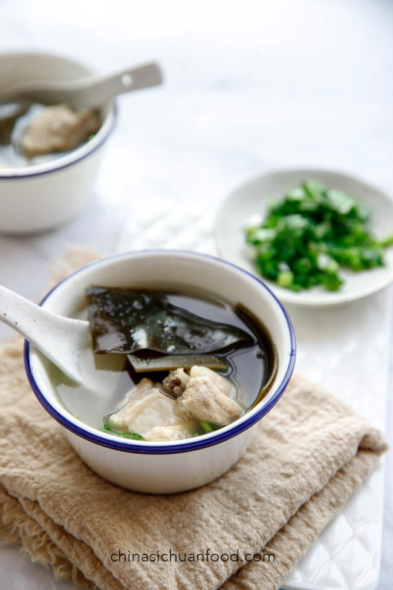

Dried Seaweed and Rib Soup

Description
Seaweed and Rib soup is a staple Chinese pork bone soup.
Using ribs gives less fat and produces a lighter flavour,
and dried seaweed gives umami. This can be served as a side
to contrast with hot sesame noodles, buns or steamed rice.
Note: Recommend using a pressure cooker so it can simmer on a
low heat with less time needed for a clean and light soup taste.
Ingredients
- 80g dried seaweed / kelp (hydrated)
- 4L water
- 500g pork ribs (chopped into bite-sized pieces)
- green onion (knotted)
- 1 thumb ginger (smashed)
- 2 tsp salt
- cilantro (garnish)
Steps
- Heat a pot of water until boiling, then put the ribs
and green onion in. Cook for 2-3 minutes, transfer out,
wash and rinse.
- Cut the dried seaweed into small pieces.
- Put the water, ginger, dried seaweed and ribs into
a high-pressure cooker. Cook using the soup option, usually
about 30 minutes.
- When finished, add salt then cover for 5-10 minutes
before serving.